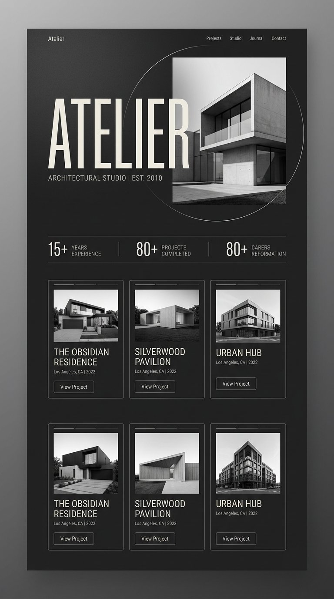

ARCHITECTURE STUDIO · EST 2014
Architectural studio crafting quiet, precise spaces where light, material and proportion do the talking.

What’s inside
Private homes carved from concrete, glass and shadow.
Public structures designed around movement and light.
Interiors that extend the building’s quiet geometry.
Every page of the original shot, exactly as designed — scroll inside the frame to explore it.